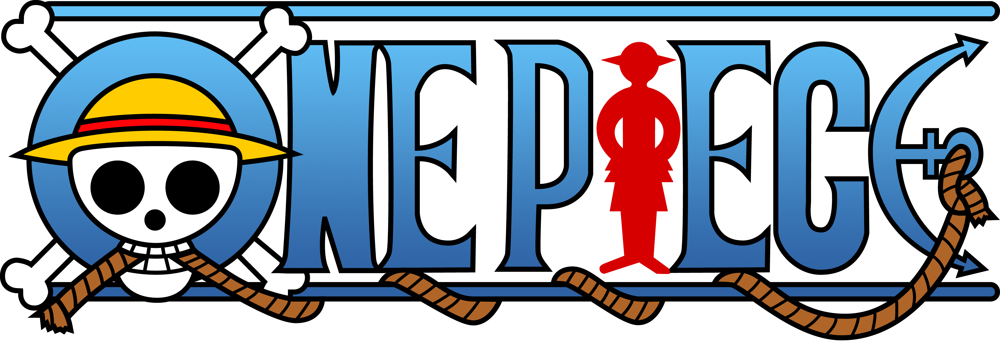

Cambiar texto a Inglés
MANUAL DE USUARIO PARA GENERAR CARTELES ONE PIECE
Bienvenido al manual de ayuda del generador de carteles de One Piece.
Este programa permite generar carteles basados en la serie One Piece, dividiéndose en tres funciones principales: Crear Póster, Buscar Pirata y Generar Informe.
Menú Principal
Al iniciar la aplicación, verás un menú con dos botones:
- Crear Póster: Permite generar un cartel personalizado con un nombre, recompensa y la imagen que se quiera.
- Buscar Pirata: Permite generar un cartel sobre un pirata según su nombre.
- Generar Informe: Permite generar un informe sobre piratas según sus recompensas.
Podremos cambiar el idioma de la aplicación eligiéndolo en la menú desplegable de Idioma.
Crear Póster
En esta sección, puedes personalizar:
- El nombre.
- La recompensa.
- La imagen.
- Y presionar el botón Crear Póster para crear tu cartel personalizado.
Buscar Pirata
En esta sección, puedes buscar:
- El nombre.
- Y presionar el botón Buscar Pirata para buscar un pirata y generar su cartel correspondiente.
Generar Informe
En esta sección, puedes seleccionar:
- Una recompensa específica de hasta el valor introducido.
- La tripulación del personaje.
- Y presionar el botón Generar Informe para generar el informe.
Generación de Carteles e Informes
Los carteles e informes se generarán en formato PDF utilizando JasperReports y se almacenarán en la carpeta correspondiente del proyecto.